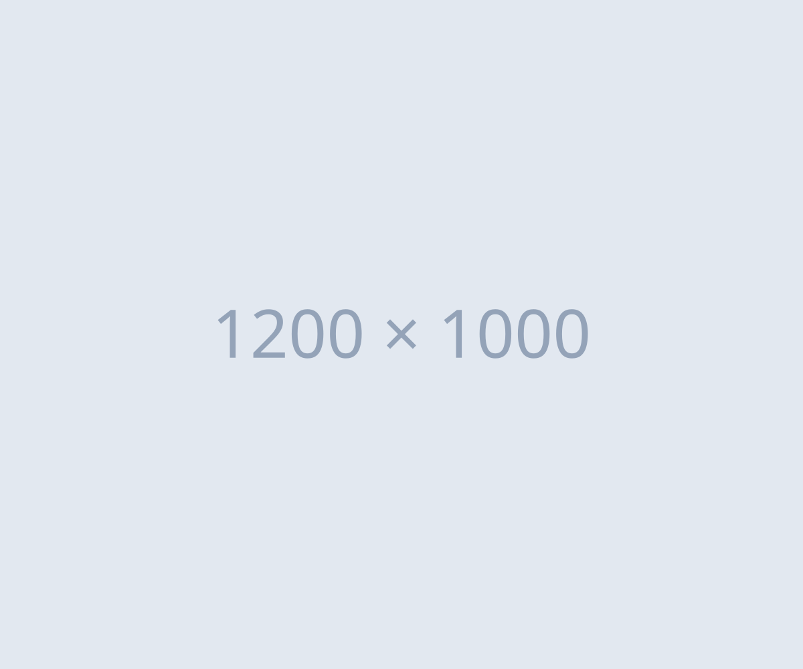

ICF PCC · Career & life-transition coach
Your next chapter deserves a braver plan.
One-to-one coaching for people changing careers, recovering from burnout or coming back after a break.

4.9 · 260 reviews from clients


Free 30-minute discovery call
Next: Thu 22 Oct, 10:30
As heard and read in
- The Weekend Edit
- Workwell
- Northern Business Review
- The Calm Hour
- Second Act Magazine
- Bright Minds Radio
-

A little about me
Ten years in HR, then a career change of my own. I coach the move I once had to make.
My Story -
My book · 2025
The Second Chapter
A field guide to changing course mid-career, without burning it all down.
Read the First Chapter -
Isla didn't hand me answers. She gave me the courage to trust my own.
Rachel, 35From retail buying to midwifery
Change is easier with someone in your corner.
-

Changing Careers
For when the job that fit at 25 doesn't fit at 35.
-
Recovering From Burnout
Rebuild energy, boundaries and a pace you can keep.
-
Returning After a Break
Back to work after parenting, illness or a sabbatical — on your terms.

Hi, I'm Isla.
I spent ten years in corporate HR watching brilliant people stay stuck. Since 2017 I've helped 700+ of them move.
700+
clients since 2017
- ICF PCC
- Certified Career Coach
- Mental Health First Aider

You don't need a new life. You need a next step.
Thirty minutes is enough to find it. The first call is on me.
Book a Free CallPick the pace that suits you.
-
Clarity Session
A single 90-minute session
One big question, untangled.
£ 220 once
- In Bristol or on video
- A written summary within two days
- One clear next step
-
Most Chosen
Next Chapter
3 months · 6 sessions
For a career move or a reset.
£ 580 × 3 months£ 1,650 was £1,740
- Six sessions, every two weeks
- A strengths and values profile
- A 90-day plan we write together
-
Deep Change
6 months · 12 sessions
For the big rebuilds.
£ 540 × 6 months£ 3,100 was £3,240
- Twelve sessions over six months
- Message support between sessions
- A mid-point and a final review
- 8 weeks
- 12 people
- Online
The Reset
A small group, a weekly call and a plan you'll actually follow.
Spring cohort · Starts Monday 1 March 2027
£6404 places left
Join the WaitlistWhere are you right now?
Three ways people startWhere I'd start with you
-
Clarity Session
You're not lost — you have one big question. We untangle it in ninety minutes.
See the Session -
Next Chapter
Something needs to change and you know it. Three months is enough to plan the move and make it.
See the Packages -
The Reset
You're running on empty. Eight weeks in a small group to rebuild your energy first.
See the Next Cohort
Kind words, from people who moved.
“I swapped a desk I dreaded for work that takes me outside. Six months, one plan, no regrets.”
Megan, 31Next Chapter · now a field ecologist
-
“From finance to UX design in eight months.”
Hannah, 34Career change -
“I went back after two years at home and asked for more, not less.”
Sofia, 36Return to work -
“Three sessions, one decision I'd avoided for five years.”
Ana, 35Clarity Session
-
“I took my evenings back.”
James, 38Burnout recovery -
“I stopped waiting to feel ready and applied anyway. I got the job.”
Callum, 31Career change -
“I finally have a plan I believe in, not just a list.”
Laura, 33Next Chapter
-
“I left law for teaching. My only regret is not doing it sooner.”
Tom, 29Career change -
“Isla asked the questions I'd been dodging. Kindly, but she asked.”
Claire, 39The Reset -
“I said no to a promotion I didn't want. First time in my life.”
Mark, 36Next Chapter
Turning Points.
Honest conversations about changing course. 120 episodes, a new one every other Tuesday.
Episode 120 · 38 min
Leaving a Job You're Good At
Notes on changing course.
All Posts
Let's talk. Thirty minutes, free.
What happens on the call
We talk about where you are, where you want to be, and whether I'm the right coach for you.